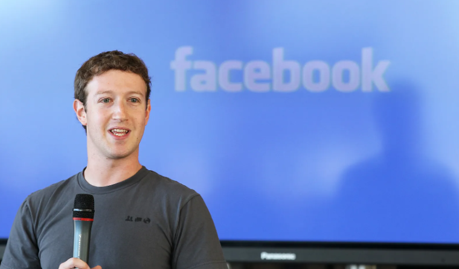
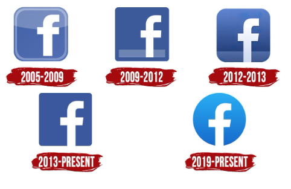
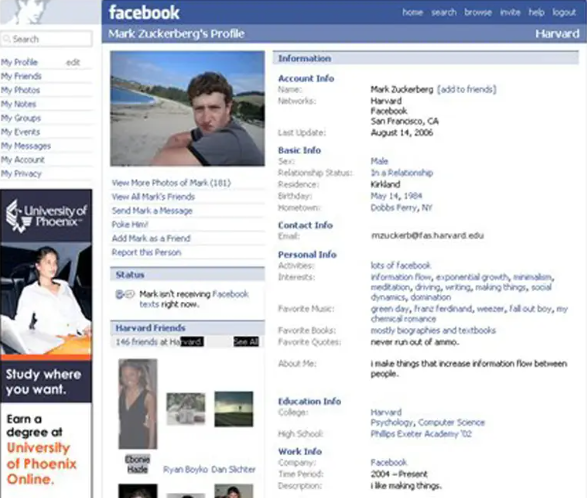

how facebook and messenger made?
Zuckerberg met with Harvard student Eduardo Saverin, and each of them agreed to invest $1,000 in the site. On February 4, 2004, Zuckerberg launched it under the name of "TheFacebook", originally located at thefacebook.com. Zuckerberg intended to create a website that could connect people around the university.
Facebook is a social networking service originally launched as Facemash in 2003. It became TheFacebook on February 4, 2004, before changing its name to simply Facebook in August 2005.[1] Facebook was rebranded to Meta on October 28, 2021 during the Connect 2021.[2] Facebook was founded by Mark Zuckerberg, Eduardo Saverin, Andrew McCollum, Dustin Moskovitz, and Chris Hughes.[3] A brief history of what has become of Zuckerberg's roommates can be found here. TheFacebook's membership was initially limited by the founders to Harvard students, but was expanded to other colleges in the Boston area, the Ivy League,[4] and gradually most universities in the United States and Canada,[5][6] corporations,[7] and by September 2006 - since 2005 under the name Facebook - to everyone with a valid email address along with an age requirement of being 13 or older.[8][9]A "facebook" is a student directory featuring photos and basic information.[21] In 2003, there were no universal online facebooks at Harvard, with only paper sheets distributed[10] and private online directories.[22][23] Zuckerberg told the Crimson that "Everyone's been talking a lot about a universal face book within Harvard. ... I think it's kind of silly that it would take the University a couple of years to get around to it. I can do it better than they can, and I can do it in a week."[23] In January 2004, Zuckerberg began writing a code for a new website, known as "TheFacebook", with the inspiration coming from an editorial in the Crimson about Facemash, stating that "It is clear that the technology needed to create a centralized Website is readily available ... the benefits are many." Zuckerberg met with Harvard student Eduardo Saverin, and each of them agreed to invest $1,000 in the site.[24] On February 4, 2004, Zuckerberg launched it under the name of "TheFacebook", originally located at thefacebook.com.[11] Zuckerberg intended to create a website that could connect people around the university. Upon finishing the site, Zuckerberg told a couple of friends, one of whom suggested sharing it on the Kirkland House online mailing list, which included several hundred people. According to his roommate, Dustin Moskovitz, "By the end of the night, we were ... actively watching the registration process. Within twenty-four hours, we had somewhere between twelve hundred and fifteen hundred registrants."[16]
 